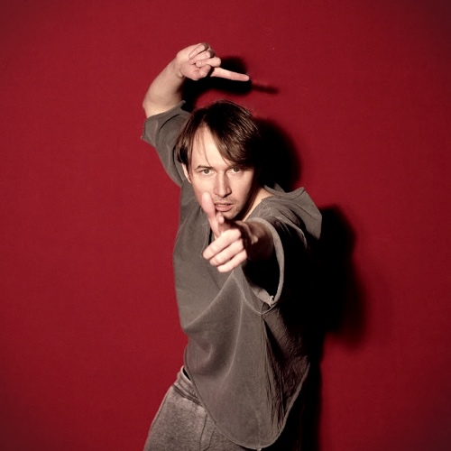
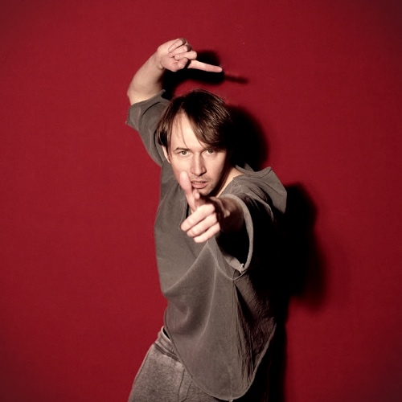

Eugene Delta ist das Soloprojekt und Alter Ego von Emanuel Donner, der als Multiinstrumentalist von Gin Ga seit mehreren Jahren in ganz Europa auf der Bühne steht.
Eugene Delta spielt am Strand Einsames mit der Geige in den klagenden Sonnenuntergang. Darüber schwappt beschworen eine Flut an elektroelegischen Wellen. Ein Meer ist Melancholie. Ein Beat ein Orkan. Deltas Stimme ein Schiff. Bestimmt zerbrechlich aber nie zerbrechend führt sie wagemutig sicher durch Sturm und Wirbel. Auf der Bühne ein Mikrofon. Gitarre, Geige, Schlagzeug. Davor und dahinter stehen Synthesizer. Viel Spaß!
"
Eugene Delta gelingt es, akustische und elektronische Komponenten sehr organisch zu verweben. Das hab ich so in der Form selten gehört. Überhaupt find ich das Songwriting fantastisch und auch die Stimme schön.
Hubert Weinheimer, das trojanische pferd
Die Geheimwaffe der Band [Gin Ga], und das sei an dieser Stelle auch mal erwähnt, ist aber Emanuel Donner an der Violine, an den Trommeln und am Mikro als herzzerreißende Backgroundstimme. Ihn anzuschauen bedeutet zu sehen, wie sich Noten in Strom verwandeln, wie sich Power und Druck anfühlen, ohne einfach nur am Verstärker zu drehen.

 
